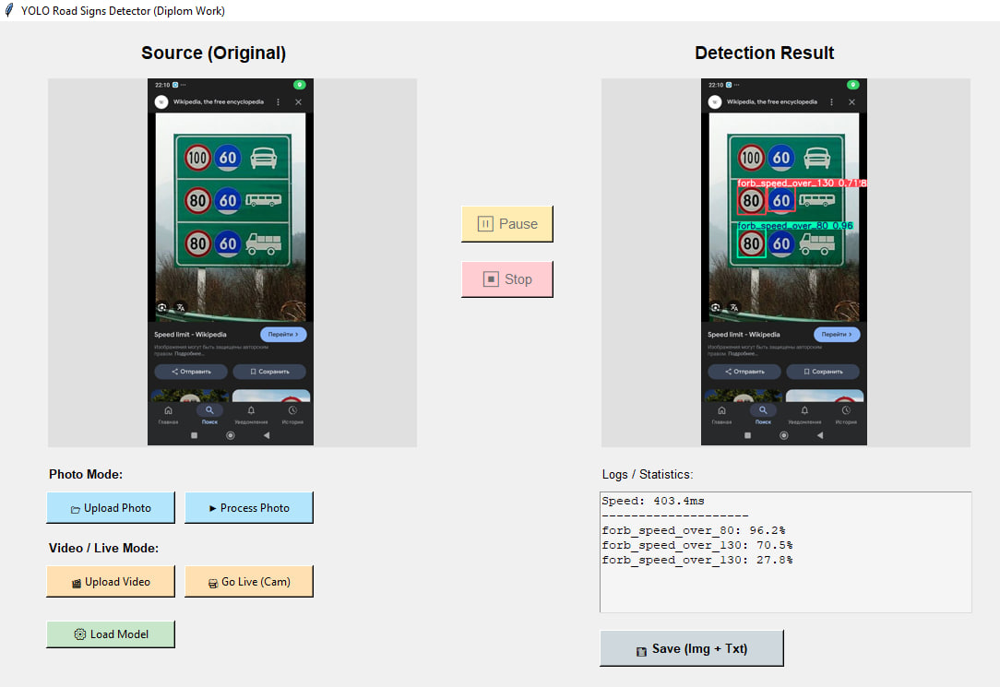

Інформаційне та програмне забезпечення системи комп’ютерного зору для розпізнавання дорожніх знаків
Information and software for a computer vision system for recognizing road signs
Програмне рішення для автоматичної детекції та класифікації дорожніх знаків у відеопотоці та на зображеннях з використанням нейромережі YOLO v11.
Ключові слова: Computer Vision, YOLO v11, Python, Road Signs, Neural Networks.
Дивитися на GitHubМета дослідження
Створення ефективної та швидкодіючої системи детекції дорожніх знаків, яка може бути використана в системах допомоги водіям (ADAS) або автономних транспортних засобах для підвищення безпеки дорожнього руху.

Приклад роботи алгоритму детекції на тестовому зображенні
Основні завдання
- Проаналізувати існуючі методи та алгоритми комп'ютерного зору для детекції об'єктів.
- Розробити та навчити модель нейронної мережі на базі архітектури YOLO v11.
- Створити графічний інтерфейс користувача (GUI) для зручної взаємодії з системою.
- Реалізувати обробку відеопотоку в реальному часі.
- Провести тестування точності розпізнавання та оптимізувати швидкодію.
Очікувані результати
Висока точність
Досягнення метрики mAP (mean Average Precision) вище 90% на тестових даних.
Швидкодія
Забезпечення обробки відео зі швидкістю не менше 30 FPS на сучасному обладнанні.
Практичне застосування
Готовий програмний продукт із зручним інтерфейсом для завантаження фото/відео.
Контактна інформація
Виконав: ст. гр. ІН-22 Добродумов Нікіта
Email: ndobrodumov@student.sumdu.edu.ua
GitHub: github.com/Norio955